▶를 누르면 스페인어(스페인 표준 발음, 음성 합성)로 들려요. [ ] 안은 한글 발음, 굵은 글자가 강세예요. 사진 출처는 PDF의 Créditos 페이지에 있어요.
01 · El baño 욕실 · Granada
la toalla f
[라 또아야]
towel · 수건
¿Me pasas la toalla?
수건 좀 건네줄래요?
수건 좀 건네줄래요?
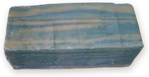
el jabón m
[엘 하본]
soap · 비누
Lávate las manos con jabón.
비누로 손을 씻어요.
비누로 손을 씻어요.
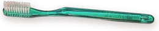
el cepillo de dientes m
[엘 세삐요 데 디엔떼스]
toothbrush · 칫솔
Mi cepillo de dientes es el azul.
제 칫솔은 파란 거예요.
제 칫솔은 파란 거예요.
la pasta de dientes f
[라 빠스따 데 디엔떼스]
toothpaste · 치약
Esta pasta de dientes sabe a menta.
이 치약은 민트 맛이 나요.
이 치약은 민트 맛이 나요.
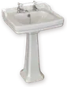
el lavabo m
[엘 라바보]
sink · 세면대
El lavabo está atascado.
세면대가 막혔어요.
세면대가 막혔어요.
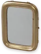
el espejo m
[엘 에스뻬호]
mirror · 거울
Me miro en el espejo.
거울로 제 모습을 봐요.
거울로 제 모습을 봐요.
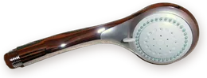
la ducha f
[라 두차]
shower · 샤워기
No sale agua caliente de la ducha.
샤워기에서 뜨거운 물이 안 나와요.
샤워기에서 뜨거운 물이 안 나와요.
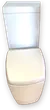
el inodoro m
[엘 이노도로]
toilet · 변기
Baja la tapa del inodoro, por favor.
변기 뚜껑 좀 내려 주세요.
변기 뚜껑 좀 내려 주세요.
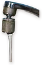
el grifo m
[엘 그리포]
tap, faucet · 수도꼭지
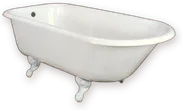
la bañera f
[라 바녜라]
bathtub · 욕조
el papel higiénico m
[엘 빠뻴 이히에니꼬]
toilet paper · 화장지
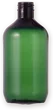
el champú m
[엘 참뿌]
shampoo · 샴푸
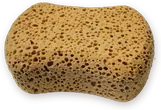
la esponja f
[라 에스뽕하]
sponge · 스펀지
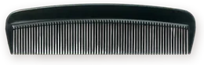
el peine m
[엘 뻬이네]
comb · 빗
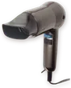
el secador de pelo m
[엘 세까도르 데 뻴로]
hair dryer · 헤어드라이어
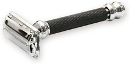
la maquinilla de afeitar f
[라 마끼니야 데 아페이따르]
razor · 면도기
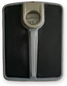
la báscula f
[라 바스꿀라]
bathroom scale · 체중계
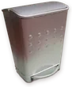
la papelera f
[라 빠뻴레라]
wastebasket · 휴지통
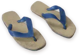
las chanclas fpl
[라스 찬끌라스]
flip-flops · 슬리퍼
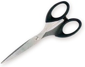
las tijeras fpl
[라스 띠헤라스]
scissors · 가위
§4 Bloques de palabras · 단어 블록
Me lavo los dientes.
I brush my teeth. · 이를 닦아요.
Me cepillo el pelo.
I brush my hair. · 머리를 빗어요.
Necesito una toalla limpia.
I need a clean towel. · 깨끗한 수건이 하나 필요해요.
No hay papel higiénico.
There's no toilet paper. · 화장지가 없어요.
¿El jabón? Lo dejo en el lavabo.
The soap? I leave it on the sink. · 비누요? 세면대에 둬요.
§5 ¿Dónde va «me»? · me의 자리
Me lavo los dientes.
활용된 동사 앞에 · 이를 닦아요.
Voy a lavarme los dientes.
동사원형 끝에 붙여서 · 이를 닦을 거예요.
Me voy a lavar los dientes.
앞에 둬도 같은 뜻 · 이를 닦을 거예요.
§6 Sin sujeto · 주어 생략
(Yo) me ducho.
· 나는 샤워해요.
(Tú) te duchas.
· 너는 샤워해.
(Ella) se ducha.
· 그녀는 샤워해요.
§8 Ordena las palabras · 정답 듣기
La toalla blanca.
blanca / la / toalla · 하얀 수건
Me lavo los dientes.
dientes / lavo / los / Me · 이를 닦아요.
No hay papel higiénico.
higiénico / hay / No / papel · 화장지가 없어요.
El cepillo de dientes.
de / dientes / el / cepillo · 칫솔
Necesito una toalla limpia.
toalla / una / Necesito / limpia · 깨끗한 수건이 하나 필요해요.
Escenas · 장면 문장
¿Dónde está el baño?
Where's the bathroom? · 화장실이 어디예요?
¿Está ocupado?
Is anyone in there? · 안에 사람 있어요?
Me estoy duchando.
I'm in the shower. · 지금 샤워 중이에요.
Ya no queda papel higiénico.
We're out of toilet paper. · 화장지가 다 떨어졌어요.
Me lavo los dientes después de comer.
I brush my teeth after eating. · 밥 먹고 나서 이를 닦아요.
02 · La cocina 부엌 · València
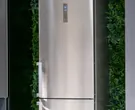
la nevera f
[라 네베라]
fridge · 냉장고
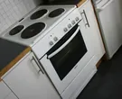
el horno m
[엘 오르노]
oven · 오븐
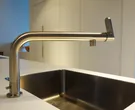
el fregadero m
[엘 프레가데로]
kitchen sink · 개수대
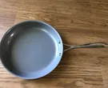
la sartén f
[라 사르뗀]
frying pan · 프라이팬
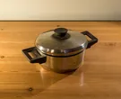
la olla f
[라 오야]
pot · 냄비
la cuchara f
[라 꾸차라]
spoon · 숟가락
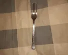
el tenedor m
[엘 떼네도르]
fork · 포크
el cuchillo m
[엘 꾸치요]
knife · 칼
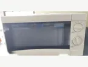
el microondas m
[엘 미끄로온다스]
microwave · 전자레인지
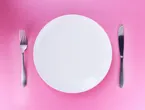
el plato m
[엘 쁠라또]
plate · 접시
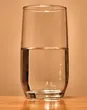
el vaso m
[엘 바소]
glass · 유리컵
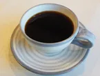
la taza f
[라 따사]
cup · 찻잔
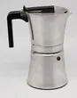
la cafetera f
[라 까페떼라]
coffee maker · 커피 메이커
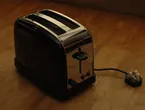
la tostadora f
[라 또스따도라]
toaster · 토스터
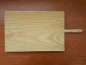
la tabla de cortar f
[라 따블라 데 꼬르따르]
cutting board · 도마
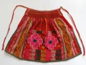
el delantal m
[엘 델란딸]
apron · 앞치마
la jarra f
[라 하라]
jug · 물병
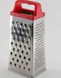
el rallador m
[엘 라야도르]
grater · 강판
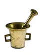
el mortero m
[엘 모르떼로]
mortar · 절구
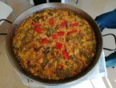
la paellera f
[라 빠에예라]
paella pan · 파에야 팬
11 · El transporte 교통 · Madrid
el tren m
[엘 뜨렌]
train · 기차
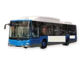
el autobús m
[엘 아우또부스]
bus · 버스
el metro m
[엘 메뜨로]
metro, subway · 지하철
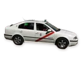
el taxi m
[엘 딱시]
taxi · 택시
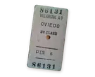
el billete m
[엘 비예떼]
ticket · 표, 승차권
la estación f
[라 에스따시온]
station · 역
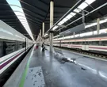
el andén m
[엘 안덴]
platform · 승강장
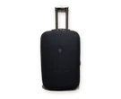
la maleta f
[라 말레따]
suitcase · 여행 가방
el avión m
[엘 아비온]
plane · 비행기
el barco m
[엘 바르꼬]
boat · 배
la bicicleta f
[라 비시끌레따]
bicycle · 자전거
el coche m
[엘 꼬체]
car · 자동차
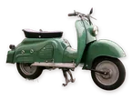
la moto f
[라 모또]
motorbike · 오토바이
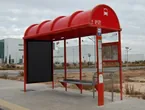
la parada f
[라 빠라다]
(bus) stop · 정류장
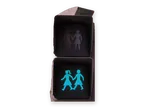
el semáforo m
[엘 세마포로]
traffic light · 신호등
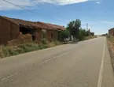
la carretera f
[라 까레떼라]
road · 도로
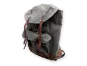
la mochila f
[라 모칠라]
backpack · 배낭
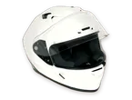
el casco m
[엘 까스꼬]
helmet · 헬멧
el aeropuerto m
[엘 아에로뿌에르또]
airport · 공항
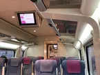
el asiento m
[엘 아시엔또]
seat · 좌석